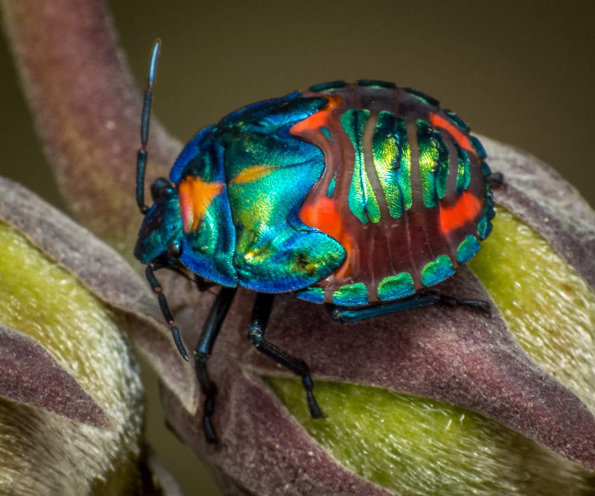
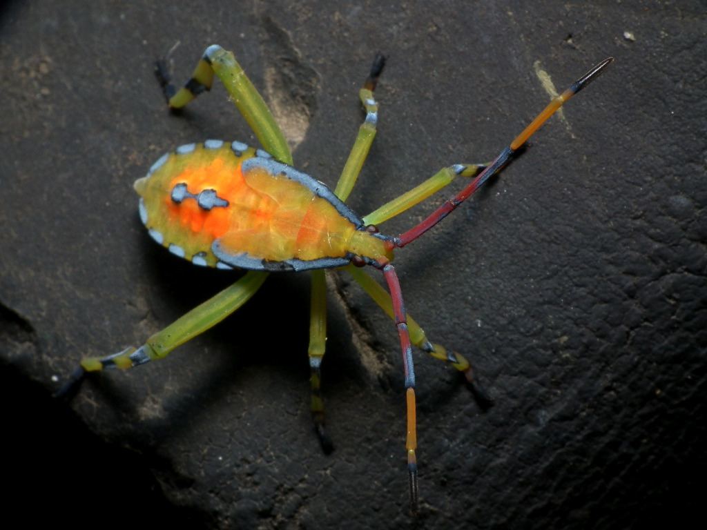
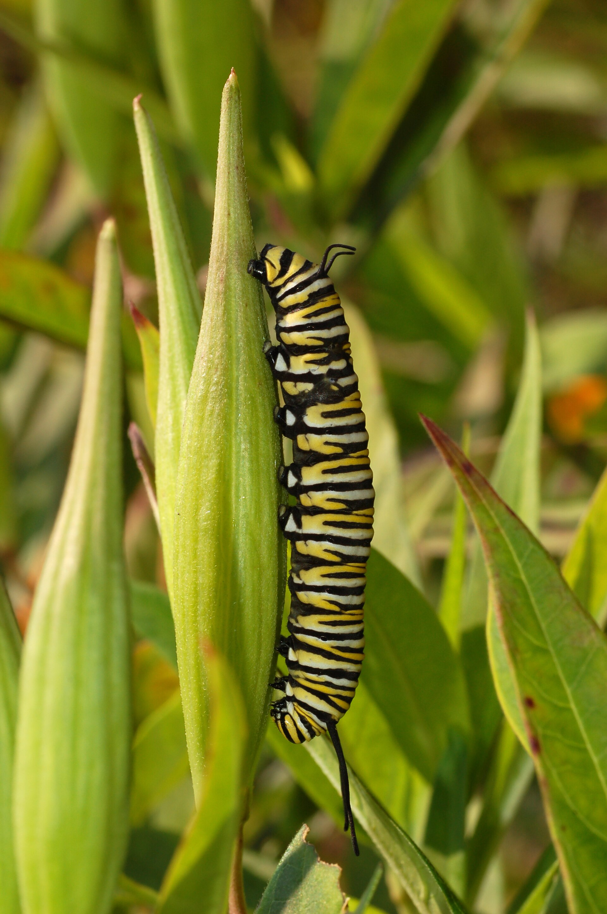

Inside the Electric Secret Life of Bugs
The first thing a jumping spider does is make eye contact. Not the vague, sideways attention of a fly or the armored indifference of a beetle, but a direct look that feels almost conversational. It stops on the edge of a leaf, raises itself on careful legs, and studies the giant shape leaning over it. For a second, the scale of the garden flips. The spider is not a speck in our world; we are a weather event in its.
That awareness is part of what makes jumping spiders so charismatic. They hunt by sight instead of waiting in a web, so their front-facing eyes are large, glossy, and built for detail. They measure distance, track movement, and plan short leaps with a precision that looks choreographed. A good jump is not a panic move. It is a tiny calculation followed by a spring-loaded decision, the spider landing exactly where the next line of the story needs to begin.

Color is the magazine cover of the bug world, and jumping spiders understand the assignment. Some flash red patches, silver scales, green chelicerae, or neat white stripes. Others keep their palette quieter, blending into bark, sand, or dried stems until they tilt and the pattern resolves. Their bodies are small enough to miss, but close looking reveals a full design system: signal, camouflage, courtship, and attitude packed into a few millimeters.
The more time you spend with them, the less useful the word creepy becomes. They groom. They hesitate. They pivot as if reconsidering an entrance. They throw silk safety lines before jumping, a practical little act of forgiveness in case the leap goes wrong. Even their hunting has a theatrical rhythm: stillness, angle, crouch, launch. The drama is real, but it happens at the pace of a fingertip shadow crossing a leaf.

Funky bugs ask for a different kind of attention than larger animals. They are easy to overlook because they do not announce themselves at human scale. But the reward for slowing down is enormous: a caterpillar built like a neon brush, a beetle polished like jewelry, a spider with the confidence of a dancer entering the floor. The backyard becomes less like background and more like a layered publication, every stem carrying its own column, portrait, and surprise.
